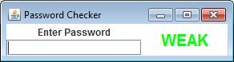
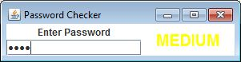
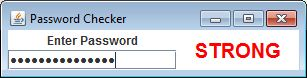
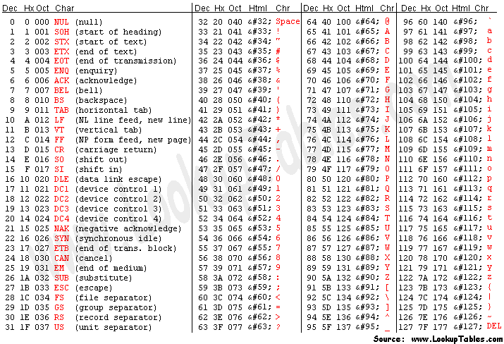

Many websites are frequently testing to see if a password is considered "Strong", meaning that it's hard for a theif to guess. For this program we are going to measure strength with 4 things.
1) Does the password include a capital letter?
2) Does the password include a lowercase letter?
3) Does the password include a number?
4) Is the password at least eight characters?
- If ONE or fewer of these rules is followed, the password is WEAK
- If TWO or THREE of these rules is followed, the password is MEDIUM
- If FOUR of these rules are followed, the password is STRONG
Start by creating the following GUI (you may choose your own colors/fonts if you wish):

Which we will later be changing to the following:

or
How to tell if a character is a capital, lowercase, or a number:
Remember the ASCII table. Each character has an int assosciated with it.
Strings have a method named codePointAt that takes in an index and returns the ascii value at that index. For example:
String str = "Hello"; int asciiVal = str.codePointAt(0);
The 0 means that the index we're looking at is index 0, which is an "H". According to the ASCII table that would put a 72 into the asciiVal variable.
Since all of the values in the ASCII table are organized, you can tell what if a letter is capitalized if it's in the range 65 to 90.

Helpful methods:
Add the following methods. Each will be in charge of getting the text from the SPasswordField and checking one rule and returning true or false accordingly.
public boolean hasACap() public boolean hasALower() public boolean hasANumber() public boolean hasEightLetters()
For the first three methods the strategy is pretty much the same. Set up a for loop to go through each index and get the ASCII value at that index. Then use an if statement to see if it's of the type that you're searching for. If it is, increment a counting variable. After the loop you should return true if you counted more than 0; false if not.
For the last method, simply use String's length method in an if statement to return true or false.
KeyListener
Add a KeyListener to the TextField whose purpose is to update the strength label every time a key is RELEASED. If the other methods are done properly, this should be relatively simple. Start with a counting variable and have four if statements, one for each rule. If the rule is followed, increment the counter. After all four statements, the counter will be a number from 0 to 4. Use that to determine what to set the strength label to.
Hint: Sometimes it's hard to tell where the program is failing. Try the following println in your keyReleased method:
System.out.println(hasACap()+" "+hasALower()+" "+hasANumber()+" "+hasEightLetters());
If you need help fixing your code, have this method ready when you ask Mr. Sacco. He'll expect it to be there.